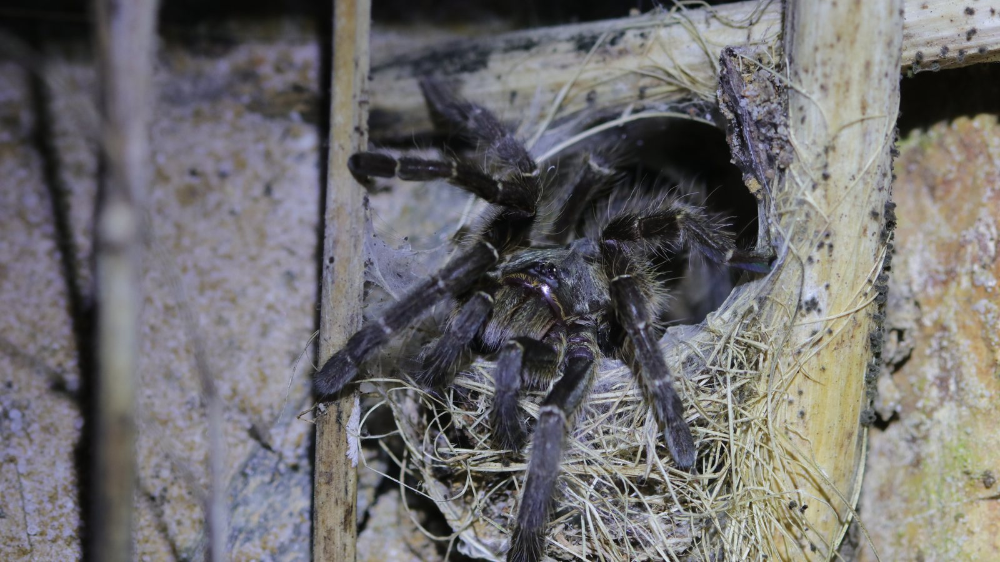
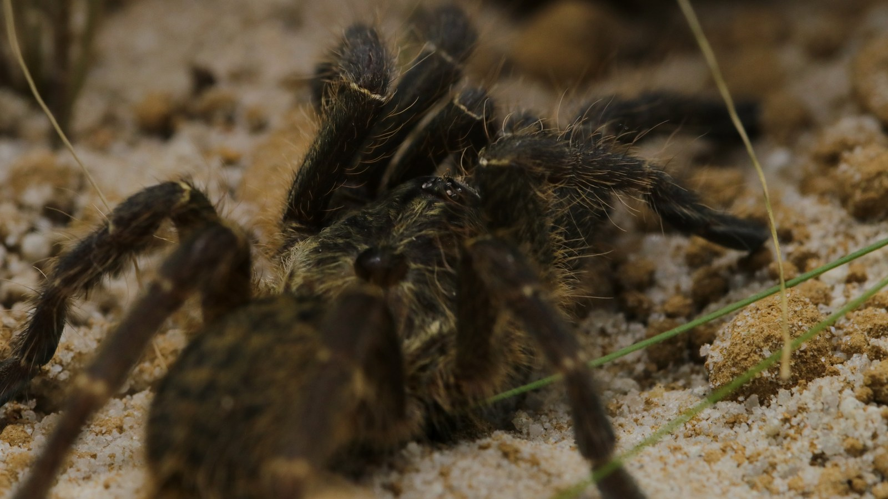
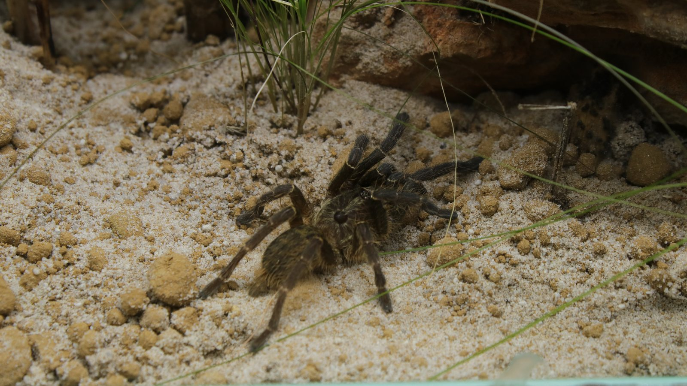

A terrestrial southern African tarantula that uses a silk-lined retreat and can reshape the ground around it. The profile photographs show this resident using both shelter and open substrate.
Species profile · Current resident
Ceratogyrus darlingi
Tarantula
This Ceratogyrus darlingi is part of the current Introvertebrates collection. The updated portrait shows the animal among leaf litter and enclosure structure.

Scientific nameCeratogyrus darlingi
FamilyTheraphosidae
Native rangeSouthern Africa
TaxonomyAccepted species
SexConfirmed male
In the wild
Natural history.
Ceratogyrus is known for the horn-like structure on the carapace. It is an unusual feature among tarantulas and a useful starting point for comparing African theraphosids.
This confirmed male is kept for observation rather than interaction, with a retreat and enough substrate to build around it. Individual behaviour is recorded without treating it as universal.
Taxonomy and range
Ceratogyrus darlingi is an accepted theraphosid species from southern Africa and the type species of Ceratogyrus. The genus was revised with field notes on its natural history, while the current catalogued name preserves a long history of older combinations and interpretations.
Burrows, shelter, and activity
This is a terrestrial, burrow-associated spider. A silk-lined earthen retreat forms the centre of its activity, giving shelter from surface conditions and a protected place for moulting and feeding. The horn-like structure on the carapace is distinctive, but its function should not be presented as settled fact.
Feeding ecology
Prey is taken close to the retreat by rapid ambush. Arthropods that cross the silk and disturbed ground around the entrance provide vibration cues; food may then be pulled back into cover. Detailed species-specific diet data remain limited, so broad claims about unusual prey are avoided here.
Defence, senses, and movement
African theraphosids do not have the New World urticating-hair defence. Escape into the retreat, speed, and a defensive posture are more relevant responses, all of which make observation from outside a secure enclosure the appropriate way to study the animal.
In my care
In my care.
This resident gives the Introvertebrates collection a living record of Ceratogyrus darlingi. The profile will continue to bring together verified species information, the introduction video, and observations recorded through the Codex.



From Instagram
Posts & reels.
From the channel
Related viewing.
Introvertebrates on YouTube
Introducing my Ceratogyrus darlingi
A closer introduction to this current resident and its place in the Introvertebrates collection.
Personal observations
From the Codex.
Introvertebrates Codex
Current resident · keeper record
A privacy-safe summary of this resident’s time in care, feeding outcomes, molts, and measurements. These are observations from the Introvertebrates collection, not species-wide averages.
Awaiting a privacy-reviewed Codex export. No invented statistics are shown.
Never published here: raw notes, record IDs, seller or breeder details, enclosure identifiers, local file paths, or exact private event dates.
Continue exploring
Related profiles.


Read further
Sources.
- World Spider Catalog — Ceratogyrus darlingiView the source.
- Koedoe — revision and natural history of CeratogyrusView the source.